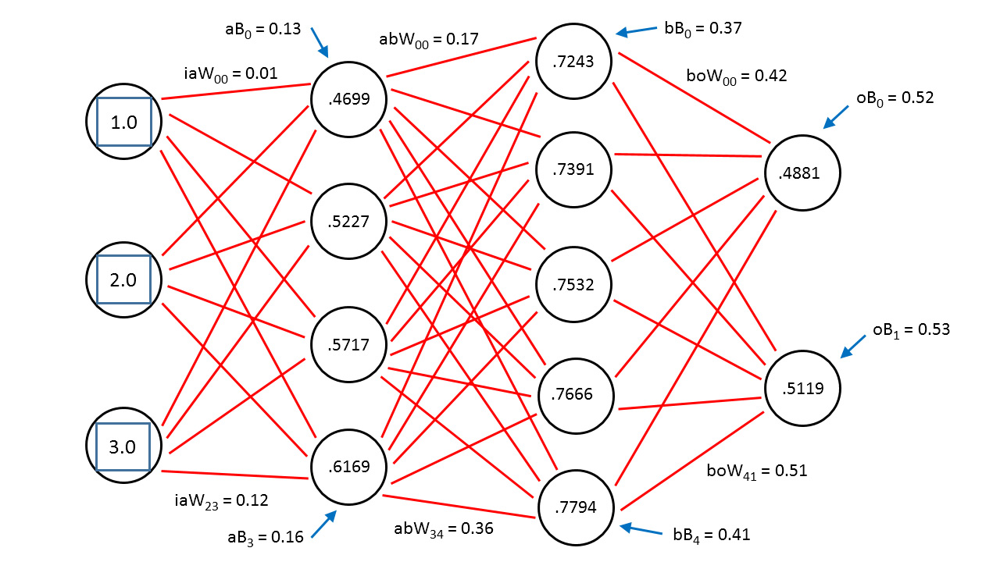

Addressing the problem
In a Q&A based system understanding and processing a question is vital to provide the user with the most appropriate answer. Machines do not understand text as humans do thus questions inputted as texts need to be transformed into a vector that preserves the context of the question that was presented by the user. The objective of this area is to provide the neural network with the most effective vector format that would preserve and best represent the context of a question in a vector so that the DNN can utilize the vector to process and find the most appropriate answer.
For this purpose we will be using few natural language modelling techniques such as word embedding,syntactic analysis, Identification of question type such as a wh-question analysis. Word Embedding is used to map words or phrases from a vocabulary to a corresponding vector. This type of representation has two important and advantageous properties:
- It is a more efficient representation
- It is a more expressive representation
Corpus Preprocessing
Corpus Preprocessing is one of primary component in the research project. Initially the corpus will be unstructured text data, which can be understood by humans, not by machines. It simply implies that, there is a necessary for a transformation of such data because many machine learning algorithms including deep neural networks, require inputs to be vectors of continuous values; they won’t just work on plain text or strings.
Since the amount of information is rapidly growing and it is becoming difficult to keep manually create knowledge bases and ontologies uptodate. Than being relying on manually created knowledge bases, applying deep learning techniques to unstructured data or the corpus to identify relationship of words and providing the proper transformation of unstructured data to a representation as an input to the neural network training model, will provide an immense help in extracting the needed answer.
One of the major application of such transformation of data [24], is Word Embedding which is a natural language technique. It is used to map words or phrases from a vocabulary to a corresponding vector of real numbers. Word embedding aims to create a vector representation [25] with a much lower dimensional space. In contrast Bag of Words [26] approach, which often results in huge and sparse vectors. In Bag of Words approach the dimensionality of the vectors representing each document is equal to the size of the vocabulary.
Word Embedding [27] is also used for semantic parsing, to extract the meaning from text to enable Natural Language Understanding. For a language model to understand the meaning of a word, it need to know the contextual similarity of words. For example if we tend to find diseases in sentences, where diabetes, diarrhea, HIV should be of close proximity. So the vectors created by word embedding preserves these similarities along with the words that regularly occur nearby in text will also be in close proximity.
Word embedding is all about building a low dimensional vector representation from corpus, which preserves the contextual similarity of words. There are word embedding techniques such as,
- 1-of-N vec (one-hot-vec)
- GloVe (Global Vectors)
- Word2vec
In a simple 1-of-N [28] encoding transforms categorical features to a format that works better with classification and regression algorithms. In simple terms every element in the vector is associated with a word in the vocabulary. The encoding of a given word is simply the vector in which corresponding element is set to one and all others are set to zero. Suppose we consider a vocabulary of five words; diabetes, diarrhea, HIV, obesity, paralysis. We could encode the the word obesity as [0, 0, 1, 0, 0]. In such a scenario, the only comparison that can be made between vectors is equality testing or it engages all features and tell which is present and which is absent for a particular set of output.
GloVe [29] is a ‘count based’ model. Which means GloVe learn their vectors through collecting word co-occurrence statistics in a form of word co-occurrence matrix X. Each element Xij of such matrix represents how often word i appears in context of word j in a large corpus. The number of "contexts" is of course large, since it is essentially combinatorial in size. Then factoring this matrix to yield a lower-dimensional matrix, where each row now yields a vector representation for each word.
In specific, the creators of GloVe illustrate that the “ratio of the co-occurrence probabilities of two words (rather than their co-occurrence probabilities themselves) is what contains information and look to encode this information as vector differences”. But when it comes for computation GloVe will be taking more memory [30], because it precomputes the large word into word co-occurrence (large word x word co-occurrence) matrix in memory[31]. Also sometimes there is a restriction on vocabulary since GloVe requires memory quadratic in the number of words: it keeps that sparse matrix of all word x word co-occurrences in RAM.
Word2vec [32] is a predictive model which is one of the most popular word embedding model. This simply learns relationship between words without any prior knowledge about the domain. The output are vectors, one vector per word with an exceptional linear relationship. Once a vector model is created out of the corpus, word2vec provides two basic tools namely analogy and distance to use. Distance - tool provide a list of words which are closely related to a particular word from the vector model. Analogy - tool is provides the ability to query for textual regularities captured in the vector model.
For example, let us assume that we use word2vec to create a vector model of the words appearing in a corpus of medical domain. If the resulting vector space represents diseases and cause of disease is projected in a two dimensional vector space, we can observe a relationship between each disease and the cause of the disease, and also similar diseases are placed closed to each other in vector space.
Further word2vec is based on two architecture: continous bags of words (CBOW and skip-gram (SG). Since word2vec as no built-in functionalities for term normalisation, the corpus needs to processed before they could be used for word2vec. Unprocessed corpus contains syntactic variations, stopwords, punctuations which has a negative impact on on how word2vec indexes the term and which will affect the quality of vector space representation.
Question Preprocessing
Word embedding maps each word to a vector space.The Embedding layer will map each token from the question to its corresponding vector space, which preserves the contextual similarity of words in the vector space.
The embedding layer in the question processing component can be done through a popular pre-trained word embedding model known as word2vec or glove(exact model will be chosen based on further trial and error)[14]. Word2vec is a small two layer neural network. It contains two distinct models (CBOW and skip-gram), each with two different training methods (with/without negative sampling) and other variations [14]. To top that, it also contains a sharp pre-processing pipeline, whose effects on the overall performance is yet to be evaluated.
The other sub-component is Syntactic analysis of a question. Syntactic analysis is the process of identifying the structure of a sentence,The interplay of syntax and semantics of natural language questions is of interest for question representation. Researchers in the area of question understanding reccomend the use of a TreeLSTM neural network for this purpose[15], since it is capable to capture long distance interaction on a tree. The other option would be to go with a chain structured LSTM but the critical downfall of it for this specific task is that it fails to capture long distance interaction on a tree[15].
To obtain the parse tree information some of the available open source parsers such as the Noah's Ark parser [16], or the Standford Core Parser can be used.
Questions by nature are composed to fulfill different types of information. A what question and a how question requires different types of information [15]. In Order to incorporate this a Wh-Analysis will be required, thus an additional layer for question adaption will be required. Wh-word is basically the question word which is one of who, why, where, which, when, how, what and rest. “rest” are the questions that don't have any question word. Example :- Name of a disease that cause bowel bleeding?. This process segregates questions into different types and considers the type of question for answer generation, a recommended approach for this would be to encode question type information into a one hot vector which is a trainable embedding vector [15], and it is incorporated in the training process.
For the purpose of implementation the popular deep neural network library tensor flow along with the python programming language will be used. For the purpose of syntactic analysis the Standford core NLP parser will be used.Python enables us to carry out string manipulation easily unlike other programming languages since user inputs are text based it will be the preferred choice of language.The choice of the above mentioned technology is due to the widely available community support and free distribution of the software.
Deep Neural Network For Answer Extraction
As mentioned before, the main objective of this project is to come up with an Artificial Neural Network (ANN) based solution for Intelligent Information Extraction. In here we are particularly focusing on addressing the Information Retrieval in a form intelligent Question and Answering System. In related work, Ontology based information extraction [17], seems to be a recently emerged subfield of information retrieval. However the inability to reason over discrete and their relationships can be identified as a major drawback in these Ontologies and knowledge base information retrieval/extraction systems [18]. Therefore we present a system which is capable of performing this task with the help of ANN particularly Recursive Neural Tensor Networks.
Artificial Neural Networks are known to perform well in intelligent systems when they are properly tweaked and used. However in order to get the optimal performance of such system it is important to select the most appropriate ANN approach and apply it accordingly. After a comprehensive study in current literature on this matter we decided to use Recursive Neural Tensor Network (RNTN) as our main inspiration for realizing this system. The selection of this methodology was done after analyzing the pros and cons as well as the relevance and the suitability of RNTN compared to other subfields in ANN. Some of the popular choices for ANN are Feedforward neural networks, Recurrent neural networks, Neural Tensor networks etc. However in order to understand the reason behind our selection over these approaches, we will first look at the main objectives expected by this module of the system.
This module, namely “Information Extraction Module” basically acts as the part where the actual decision making happens. The primary objective of this module is to generate an answer to the pre-processed question by using the structured data available in the pre-processed corpus. All these inputs will be in a form of vectors. The answer which is the expected output of this module, is generated and presented only if it exceeds a satisfactory level of confidence in order to ensure the reliability of the system since the proposed system is expected to operate in cases of medical emergencies and the reliability is of paramount importance. The answer generated will be in an abstract form and it will be used by the answer generation block in order to generate a meaningful answer.
Having understood the basic objective of the module now let us take a look at the reason behind our proposed methodology in the context of the problem statement. It should be noted that here we are generating answers from a pre-processed corpus which is already available. The Recurrent Neural Networks (RNN) shows promising performance when implemented in system where it is needed to exhibit dynamic temporal behavior in applications like handwriting recognition, speech recognition. However in our case since we are using data from a predefined corpus this might not be the most appropriate solution to address the requirement. On the other hand Neural Tensor Network specifically Recursive Neural Tensor Networks (RNTN) are more appropriate in scenarios where Natural Language Processing (NLP) and Sentiment Analysis are performed. These RNTNs are able to deal with the hierarchical relation in the words of a sentence which will be beneficial in our case.
In order to implement this ANN system, Python along with Tensorflow library will be used as main tools. This choice of the above tools was done considering their performance and the online support available for these tools compared to others. The neural network will be trained with the expectation of performing information extraction on an arbitrary (generic) rather than a specific corpus in order to realize a versatile system. The training dataset will be provided by National Health Services, England. In addition to that possibility of using datasets which are available online will also be explored.
Answer Generation
The objective of this component is to generate answers in natural language form after the correct answer has been identified. This component is required because the corpus will not always have the answer in the required format. This means we need to pre-process the answer that we give to the user. Since a goal of this project is to make it extremely user friendly to interact with a large corpus, the answer generation component is necessary to ensure that user is able to interact with the system as naturally as possible.
The challenge with generating natural language from a single piece of text is that it is the reverse approach to what is taken by most other researchers. Usually deep neural networks are used to identify patterns and are used as predictive models. In this case the DNN must be used as a generative model instead. This means given some fragments of a sentence, a well trained model can create a proper sentence in natural language format.
One possible approach is to use a recursive auto encoder model which will be fed with data formatted in a dependency parse tree [19]. In this approach the researchers have constructed a sentence level vector which can be decomposed when required and the same sentence can be retrieved again later on. However by randomising the vector’s at the output stage (decomposition) they have managed to generate paraphrased sentence structures from the data that they feed in. This approach requires some complex corpus preprocessing and is therefore a tedious task to carry out.
Another approach to this problem is to use recurrent neural networks (RNN). In a RNN the neurons and tensors connect together to form a directed cycle. This gives the neural network some memory properties. The neurons have an activation time after which they stop firing. This is in contrast to regular feed forward networks. However RNN’s have what is often referred to as the ‘exploding gradients problem’ because of the hidden states that the neurons can go into. This has made training RNN’s tough. A recent development in the Hessian-Free optimization technique however has made it effective to train RNN’s [20]. Sutskever et al. show how they have trained and optimised a RNN to predict the next character in a stream of characters [21]. The researchers developed a character level RNN model that was able to generate text with a high level linguistic structure and correct grammatical structure.
The most prominent research that has been done in this field is by a researcher named Andrej Karpathy, a PhD student from Stanford. He created a RNN called Char-RNN that is able to generate new text when a chunk of text is fed. Char-RNN works by analysing the previous characters in a string and guessing what the next characters should be. Therefore, by training a RNN with a large data set such as Project Gutenberg we will be able to train a good RNN model. Then the model can be fed with some primetext which would come from the answer sentence selected in the previous component and the model should be able to generate the required sentence [22].
A RNN acts like a feedback loop where the output of one layer is added to the input and is fed back into the same neural net. This means a RNN can form a time series as shown below. So it is able to process information in a continuous series and this makes it ideal for forecasting information.
 Basic representation of an ANNWork Flow diagram of the question preprocessing component is given below.
Deep learning can be defined a subset of machine learning techniques that uses non-linear information processing to identify and extract features and patterns in data, classification and transformations